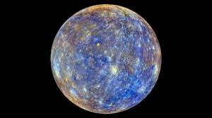
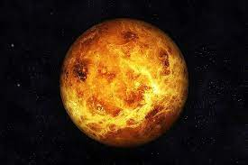
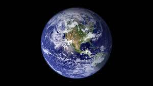
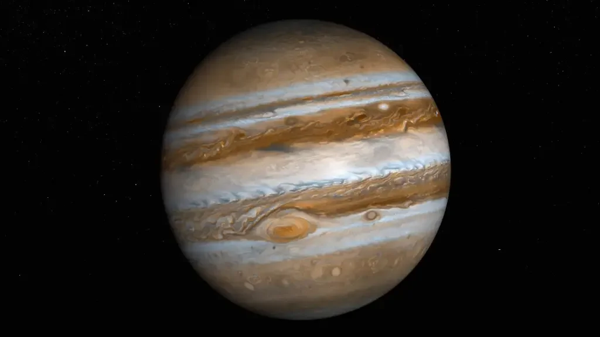
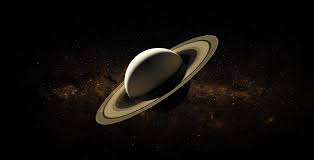
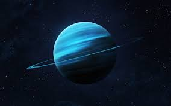
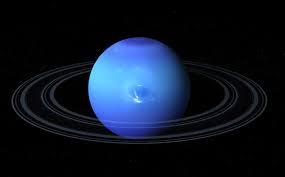

| PLANETAS |
ORIGEM |
IMAGENS |
| Mercúrio |
Mais próximo do Sol, é o planeta que completa a volta na estrela mais rápido. Os gregos o chamavam de Hermes, em alusão ao mensageiro do Olimpo mais veloz. Mercúrio é a versão romana desse deus. |
 |
| Vênus |
Os astrônomos da Antiguidade se encantavam com o brilho do planeta no céu noturno. Por isso, foi batizado com o nome da deusa romana do amor e da beleza |
 |
| Terra |
Os gregos a nomearam o planeta de Gaia, entidade titânica que representa a terra. Já os romanos escolheram a palavra Telo para representar a Terra. O nome atual tem mais de mil anos, é de origem germânica e significa “solo”. |
 |
| Marte |
A cor vermelha marcante fez com que os romanos o batizassem com o nome do deus da guerra, Marte. Os egípcios o chamavam de O Vermelho. Na Ásia, era a Estrela de Fogo. |
 |
| Júpiter |
O principal deus romano dá nome ao maior planeta do Sistema Solar. Na Grécia, ele era Zeus. No oriente, seu nome era Estrela da Madeira. |
 |
| Saturno |
Um dos titãs e pai de Júpiter, Saturno nomeia o planeta no que pode ter sido uma representação de pai e filho pela mitologia romana. Saturno é o Deus da Agricultura dos romanos, o equivalente a Kronos, Deus pai de Júpiter, na mitologia grega. |
 |
| Urano |
O nome é uma homenagem ao deus grego do céu, mas seu descobridor tentou batizá-lo em tributo ao rei inglês Jorge III. A tentativa do astrônomo William Herschel não pegou no resto do mundo, e o Reino Unido acatou Urano em 1850. |
 |
| Netuno |
Por causa da cor azul, em 1846, foi batizado pela comunidade astronômica em homenagem ao deus romano dos mares |
 |